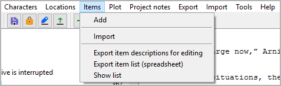

Items menu
Item operation

Add
Add a new item
You can add an item to the tree with Items > Add.
If an item is selected, the new item is placed after the selected one.
Otherwise, the new item is placed at the last position.
The new item has an auto-generated title. You can change it in the right pane.
Import
Import items from another project
This will import a selection of items from another project. First you select an XML file containing the item data. Then you select the items you want to add to the current project.
Hint
To create an XML item data file for the current project, use Export > Characters/locations/items data files.
Export item descriptions for editing
Export an ODT document
This will generate a new OpenDocument text document (odt) containing
item descriptions that can be edited in Office Writer and written back
to project format. File name suffix is _items_tmp.
Export item list (spreadsheet)
Export an ODS document
This will generate a new OpenDocument spreadsheet (ods) containing a
item list that can be edited in Office Calc and written back to project
format. File name suffix is _itemlist_tmp.
You may change the sort order of the rows. You may also add or remove rows. New entities must get a unique ID.
Show list
Show an HTML report with items data
This will generate a list-formatted HTML file, and launch your system’s web browser for displaying it.
The Report is a temporary file, auto-deleted on program exit.
If needed, you can have your web browser save or print it.